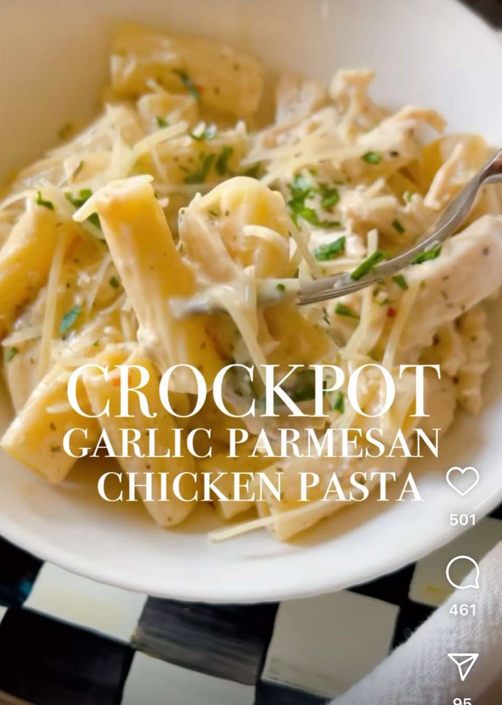

Garlic Parmesan Chicken Pasta
CrockpotChicken
PrepPT0S
CookPT4H

Ingredients
- 2 lbs boneless, skinless chicken breasts
- 1 bottle (12 oz) Buffalo Wild Wings Garlic Parmesan Sauce
- 2 cups milk
- 1 block (8 oz) cream cheese, cubed
- 1 cup grated Parmesan cheese
- 1 lb pasta
- Fresh parsley, for garnish
Directions
- Place chicken breasts in the crockpot.
- Pour Buffalo Wild Wings Garlic Parmesan Sauce over the chicken.
- Add milk, cream cheese and Parmesan cheese.
- Cover and cook on LOW for 4-5 hours or HIGH for 2-3 hours until chicken shreds easily.
- Shred chicken in the crockpot using two forks.
- While the sauce thickens, cook pasta according to package instructions. Drain and set aside.
- Stir cooked pasta into the crockpot, mixing well with the creamy sauce.
- Garnish with fresh parsley and extra Parmesan cheese.
- Serve warm and enjoy!
This page includes Schema.org Recipe structured data for recipe importers.